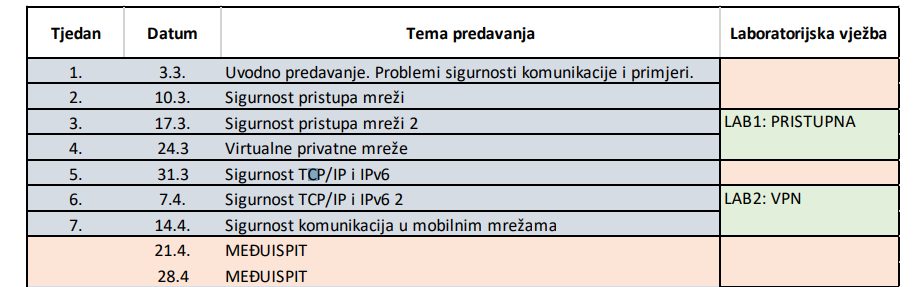

se zna išta o ispitu kak će izgledat/od kud učiti?
🤡 Isto kao i SRS
Me nešto kao srs završni ispit
tomekbeli420 a kak je to bilo za nas koji nismo imali? 😃
🤡 pls
🤡 slicno kao sigkom
🤡 pitanja slobodnog odgovora, nešto objasnit (može doć i s labosa)
koje sve prezentacije ulaze u ispit i jel najbolje iz njih ucit ili neki drugi izvor?
jackPackage 
jackPackage
𝐓𝐇𝐄 𝐒𝐄𝐂𝐑𝐄𝐓 - 𝐂𝐋𝐔𝐁 poslao sam im mail i kaže Mikuc “Sve.”
Sta sve ulazi u meduispit ?
Jaster111 do koje je to preze ? Peta ukljucujuca ?
𝐓𝐇𝐄 𝐒𝐄𝐂𝐑𝐄𝐓 - 𝐂𝐋𝐔𝐁 tako se i meni čini, al ako netko ima bolji info, nek pomaže.
Bio sam na zadnjem predavanju, bio gladan pa sam napola slusao, ali mislim da smo tad obrađivali 5. prez i dosli do kraja, tako da bi i ja pretpostavio da je peta zadnja
anon00 gotovo sam siguran da smo na predzadnjem predavanju poslusali 6-PKI kad je prof pricao o certifikatima, tak da smo vjv i 6-TLS radili, ali dalje ne znam
Me Xiaomikuc strikes again. Kad je vec obradio 8 prezentacija :/
Me Ovo preseravanje Mikuca ne razumijem, što ne može odgovoriti normalno na pitanje, pošto su na predavanjima odradili dio 6, možda cijelu?
jel “sve” onda uključuje i 7-Infrastruktura i 8-Aplikacije ili sve do i uključujući 6-PKI, 6-TLS
🤡 pitanje je glasilo Koje sve prezentacije ulaze u MI? on je rekao Sve.
𝐓𝐇𝐄 𝐒𝐄𝐂𝐑𝐄𝐓 - 𝐂𝐋𝐔𝐁 budemo na ispitu onda ako bude neko pitanje “koje su najbolje… koje bi iskoristili…. ili nesto slicno” napisali odgovor “sve” HAHAHAAH